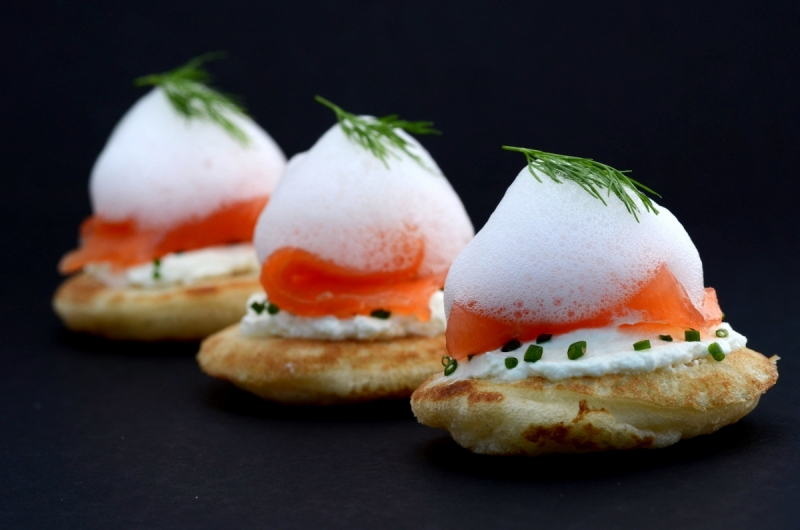

Toast de saumon fumé et écume citronée à l'aneth.
 15 min
15 min- Difficulté :

- Technique(s) : Emulsification
Ingrédients
Lc
Lécithine de soja
- 2g de lécithine de soja
- 50g de jus de citron jaune
- 100g de jus de citron vert
- 15g de sucre
- 200ml d'eau
- 25 blinis
- 6 tranches de saumon fumé
- 200g de fromage frais

Préparation
- Toaster le pain légèrement . Le tartiner de fromage frais puis le couvrir de saumon fumé. Réserver.
- A part, mélanger l'aneth, les jus de citrons et l'eau. Faire chauffer le tout et laisser infuser l'aneth hors du feu. Passer la préparation au tamis afin d'éliminer la majorité des brins d'aneth.
- Mixer en ajoutant la Lécithine et le sucre puis porter à frémissement.
- A l'aide d'un mixeur plongeant, incorporer un maximum d'air. Recommencer autant de fois que nécessaire.
- Dresser l'écume sur les toasts et servir.